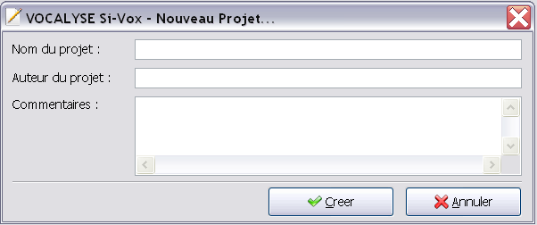

Pour créer un nouveau projet SIVOX, il faut cliquer sur Fichier > Nouveau Projet ou simplement cliquer sur le boutton :
Le logicel vous demande alors les informations concernant le nouveau projet (nom du projet, nom d'auteur et commentaire)

Si vous choissisez d'annuler l'action, rien ne sera créé. Si vous cliquez sur Créér le logiciel cré un nouveau projet avec les informations entrées précédement.